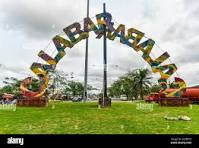

CALABAR IS MY FAVOURITE CITY
Calabar is a historic and culturally rich city in southern Nigeria, known for its lush
greenery,
warm hospitality, and deep roots in tradition. Once a major trading port, the city blends
colonial-era architecture with vibrant local life, colorful markets, and lively festivals.
Calabar
is especially famous for its annual Carnival Calabar, often called “Africa’s biggest street
party,”
which fills the city with music, dance, and celebration. Surrounded by rivers and
rainforest, it has
a calm, welcoming atmosphere that sets it apart from many larger Nigerian cities.
